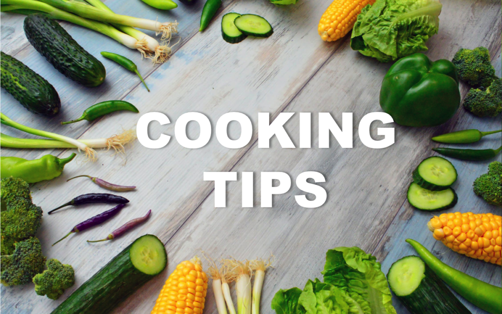

We're excited that you've chosen to explore the wonderful world of seafood cuisine with us. Before you start cooking, we want to provide you with some helpful tips to ensure that your seafood dishes turn out delicious every time.

Tips for beginners:
Start with simple recipes: Begin with recipes that have fewer ingredients and are easier to make. You'll get comfortable with the basics before moving on to more complex recipes.
Prepare all ingredients before cooking: Gather all the ingredients you need before you start cooking, and prepare them by chopping, peeling, and measuring them as required. This will help you stay organized and ensure that you don't forget any ingredients.
Always start with fresh seafood: The quality of your seafood is crucial to the success of your dish. Look for seafood that is firm, has a mild odor, and bright, shiny flesh.
Use the right tools: Invest in some basic kitchen tools such as a good quality knife, cutting board, pots, and pans. Having the right tools makes cooking easier and more enjoyable.
Follow the recipe: Read the recipe carefully and follow it step-by-step. Cooking is like science, so it's important to follow the recipe to achieve the desired result.
Don't be afraid to experiment: While it's important to follow the recipe, don't be afraid to add your own touch to it. Experiment with different ingredients and spices to make the dish your own.
Taste as you go: Taste your dish as you cook to ensure that it's turning out as you expected. Adjust the seasoning or other ingredients as required.
Clean as you go: Clean up as you cook to keep your kitchen organized and minimize the cleanup at the end. This also reduces the risk of cross-contamination and makes the cooking process more enjoyable.
Have fun: Cooking can be a lot of fun, so enjoy the process! Play some music, invite friends or family over to help, and have a good time.